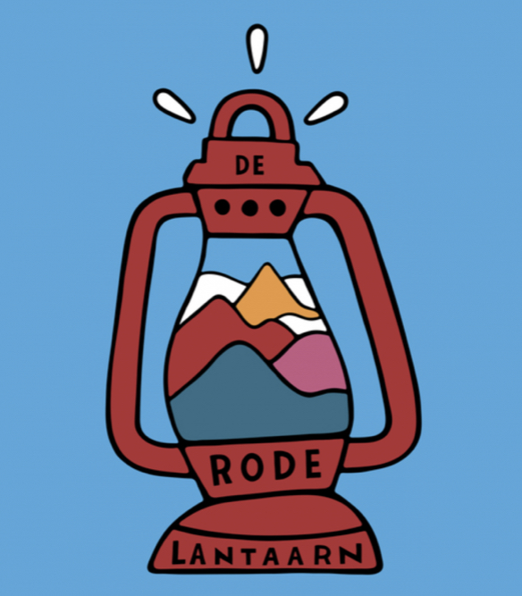

De Rode Lantaarn
Omloop Het Nieuwsblad 2026
Ken jij alle 175 renners en hun ploeg?
Kies het juiste team voor elke renner!
Alle 175
Top 50
Top 25
Start Quiz
Omloop Het Nieuwsblad 2026
Welk team? Quiz
0
Goed
1/175
Vraag
0
Streak
0
Fout
Volgende
Resultaat
Opnieuw